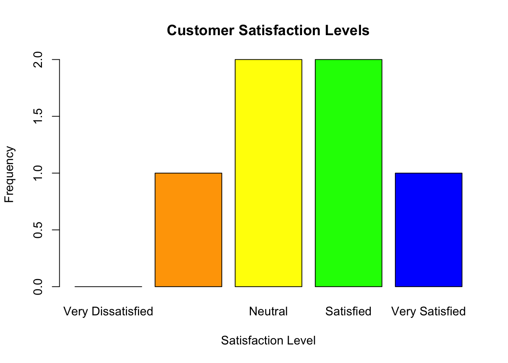
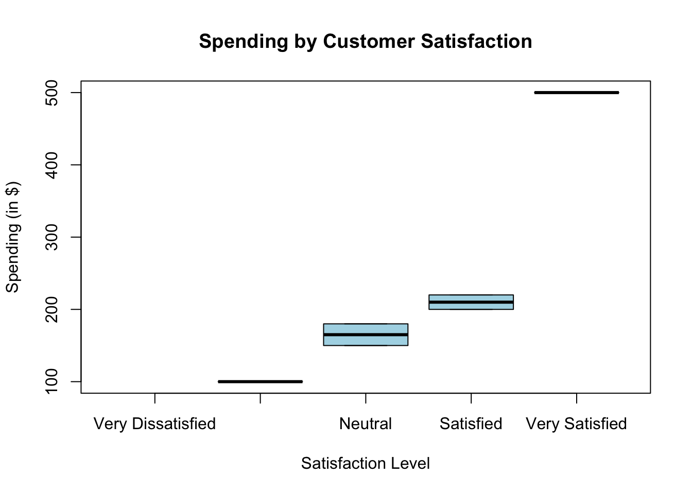
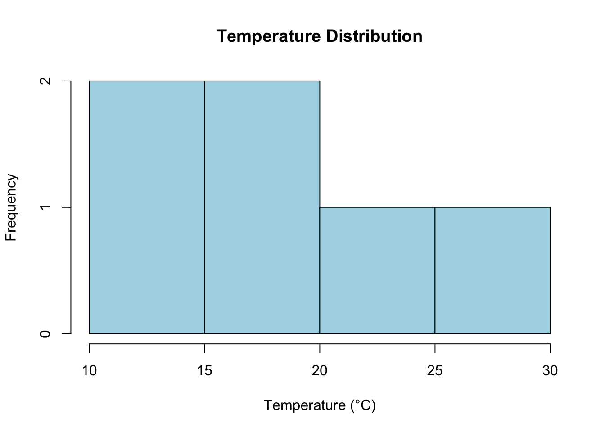
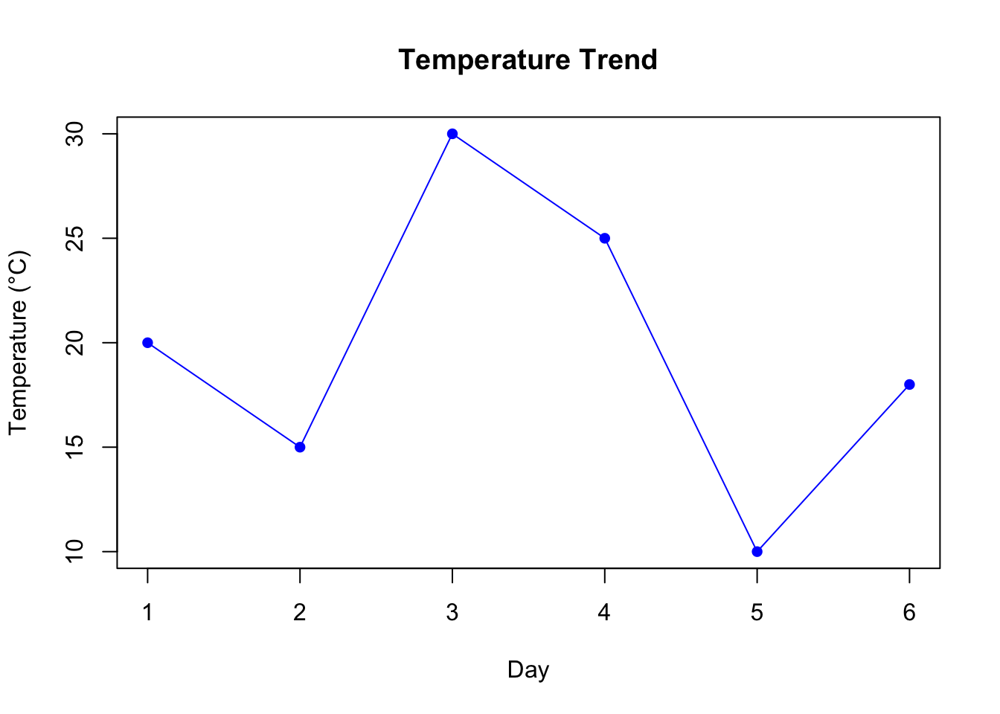
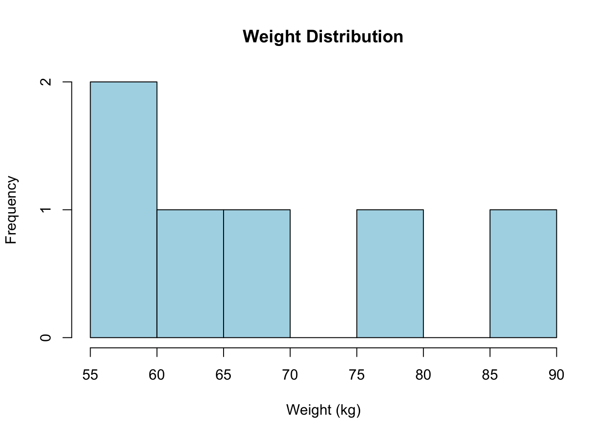
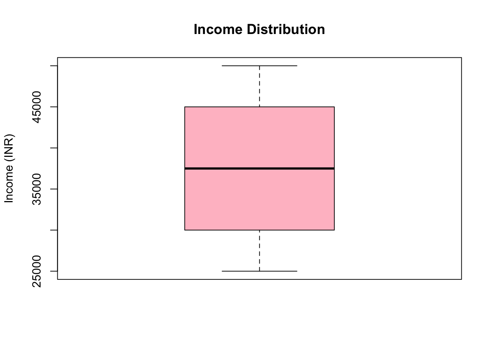
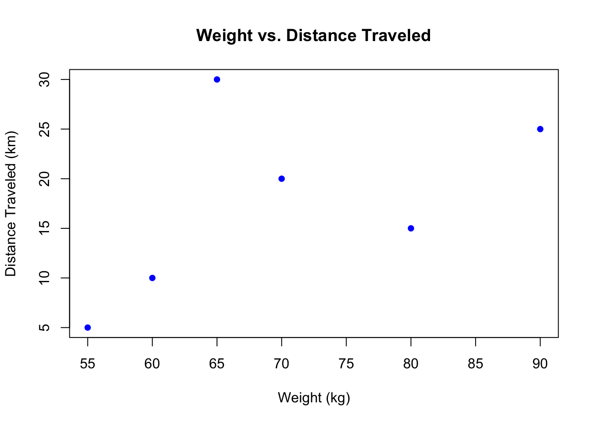
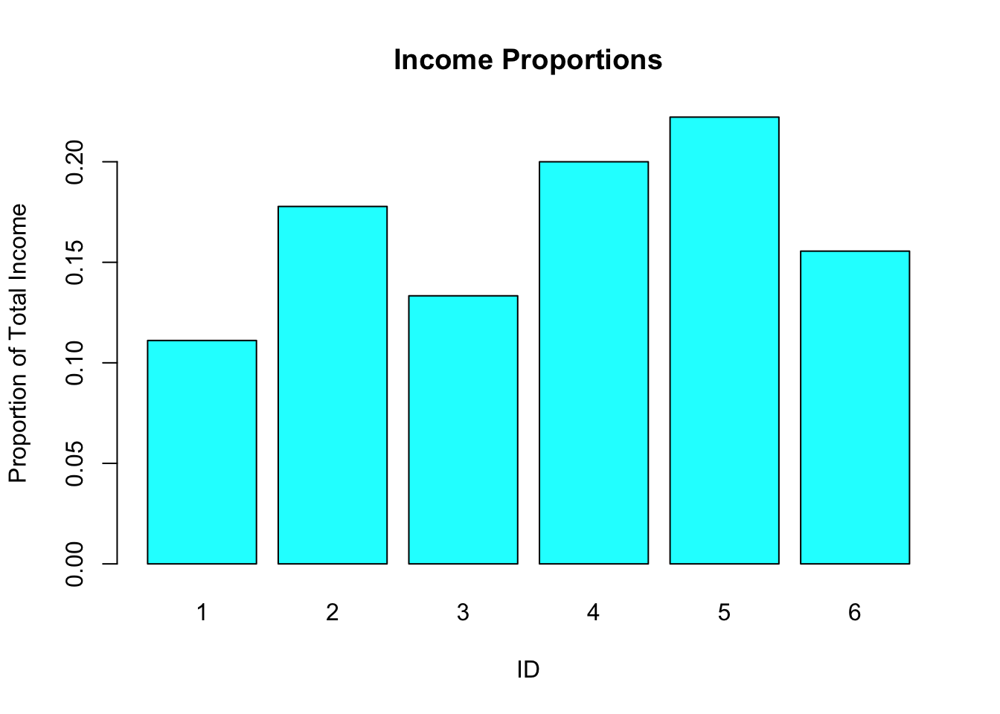

A bar plot is ideal for visualizing ordinal variables:
# Bar plot for satisfactionbarplot(table(satisfaction), main ="Customer Satisfaction Levels", col =c("red", "orange", "yellow", "green", "blue"), xlab ="Satisfaction Level", ylab ="Frequency")

Box Plot with Ordinal Data
If ordinal variables are associated with a numeric variable, box plots can show trends.
# Create a numeric variable (e.g., customer spending)spending <-c(200, 150, 500, 100, 180, 220)# Box plot of spending by satisfactionboxplot(spending ~ satisfaction, main ="Spending by Customer Satisfaction", xlab ="Satisfaction Level", ylab ="Spending (in $)", col ="lightblue")

2.3 Analyzing Ordinal Variables
Frequency Table
# Frequency table for satisfactiontable(satisfaction)
satisfaction
Very Dissatisfied Dissatisfied Neutral Satisfied
0 1 2 2
Very Satisfied
1
Summary Statistics for Ordinal Variables
Although ordinal variables are not numeric, you can explore their distribution:
# Summarize ordinal datasummary(satisfaction)
Very Dissatisfied Dissatisfied Neutral Satisfied
0 1 2 2
Very Satisfied
1
ID Education Satisfaction Spending
1 1 High School Neutral 150
2 2 Bachelor's Satisfied 200
3 3 Master's Very Satisfied 500
4 4 Ph.D. Dissatisfied 120
5 5 High School Neutral 180
6 6 Bachelor's Satisfied 250
Compare Groups
Ordinal variables can be used to group and compare other variables.
# Mean spending by education levelaggregate(Spending ~ Education, data = survey_data, FUN = mean)
Education Spending
1 High School 165
2 Bachelor's 225
3 Master's 500
4 Ph.D. 120
Check Correlation
While ordinal variables are categorical, they can sometimes be treated as numeric for simple correlation checks.
# Convert satisfaction to numeric and check correlationcor(as.numeric(survey_data$Satisfaction), survey_data$Spending)
[1] 0.8709492
3 Interval Variables
3.1 Creating Interval Variables
Temperature in Celsius
# Create a vector for temperaturetemperature <-c(20, 15, 30, 25, 10, 18)# Print the variableprint(temperature)
[1] 20 15 30 25 10 18
# Check the structurestr(temperature)
num [1:6] 20 15 30 25 10 18
IQ Scores
# Create a vector for IQ scoresiq_scores <-c(110, 95, 120, 130, 105, 115)# Print the variableprint(iq_scores)
[1] 110 95 120 130 105 115
Dates
Dates in interval form represent the time elapsed (e.g., days, months, years).
# Create a vector for datesdates <-as.Date(c("2024-01-01", "2024-01-10", "2024-01-15", "2024-02-01", "2024-02-15"))# Calculate intervals (difference in days)date_intervals <-diff(dates)print(date_intervals)
Time differences in days
[1] 9 5 17 14
3.2 Analyzing Interval Variables
Summary Statistics
# Summary statistics for temperaturesummary(temperature)
Min. 1st Qu. Median Mean 3rd Qu. Max.
10.00 15.75 19.00 19.67 23.75 30.00
# Summary statistics for IQ scoressummary(iq_scores)
Min. 1st Qu. Median Mean 3rd Qu. Max.
95.0 106.2 112.5 112.5 118.8 130.0
Calculating Differences
Since interval variables allow meaningful differences, you can calculate and interpret these:
# Difference in temperaturetemperature_diff <-diff(temperature)print(temperature_diff)
[1] -5 15 -5 -15 8
3.3 Visualizing Interval Variables
Histogram
A histogram shows the distribution of interval data.
# Histogram for temperaturehist(temperature, main ="Temperature Distribution", xlab ="Temperature (°C)", col ="lightblue", breaks =5)

Line Plot
If the data has a time component, a line plot is useful.
# Line plot for temperatureplot(temperature, type ="o", main ="Temperature Trend", xlab ="Day", ylab ="Temperature (°C)", col ="blue", pch =16)

3.4 Working with Dates as Interval Data
Calculating Differences Between Dates
# Calculate the interval in daysdate_diff <-as.numeric(diff(dates))print(date_diff)
[1] 9 5 17 14
Plotting Dates
# Create a line plot with datesplot(dates[-1], cumsum(date_diff), type ="o", main ="Cumulative Days Over Time", xlab ="Dates", ylab ="Cumulative Days", col ="green", pch =16)
A histogram helps visualize the distribution of ratio variables.
# Histogram for weighthist(weight, main ="Weight Distribution", xlab ="Weight (kg)", col ="lightblue", breaks =5)

Box Plot
Box plots are useful to show the range and outliers in ratio data.
# Box plot for incomeboxplot(income, main ="Income Distribution", ylab ="Income (INR)", col ="pink")

Scatter Plot
A scatter plot can show relationships between two ratio variables.
# Scatter plot of weight vs. distanceplot(weight, distance, main ="Weight vs. Distance Traveled", xlab ="Weight (kg)", ylab ="Distance Traveled (km)", col ="blue", pch =16)

4.4 Testing Ratio Variables
Dataset
# Create a dataset with ratio variablesratio_data <-data.frame(ID =1:6,Weight = weight, # Ratio variableDistance = distance, # Ratio variableIncome = income, # Ratio variableTime =c(2, 4, 1, 3, 5, 6) # Ratio variable (time in hours))# Print the datasetprint(ratio_data)
# Bar plot for income proportionsbarplot(income_prop, main ="Income Proportions", names.arg = ratio_data$ID, xlab ="ID", ylab ="Proportion of Total Income", col ="cyan")

Line Plot for Trend
# Line plot of time vs. distanceplot(ratio_data$Time, ratio_data$Distance, type ="o", main ="Distance Traveled Over Time", xlab ="Time (hours)", ylab ="Distance (km)", col ="green", pch =16)